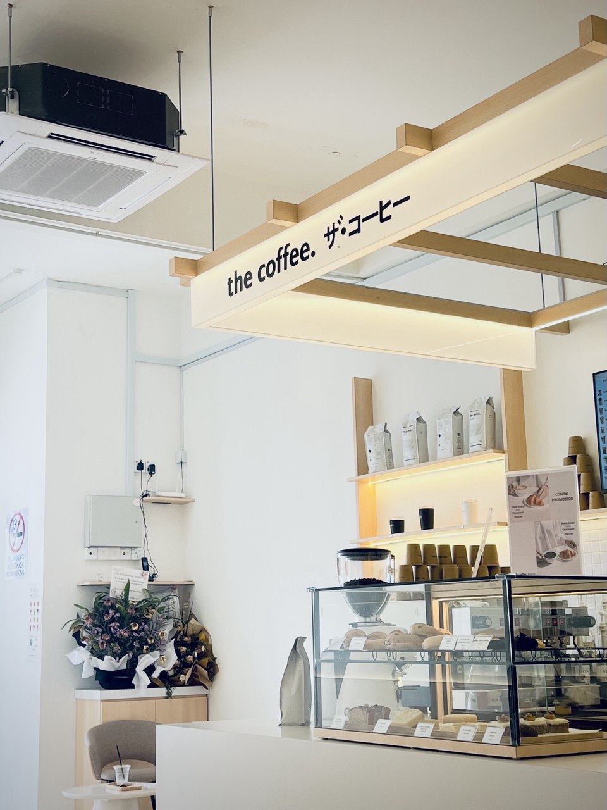
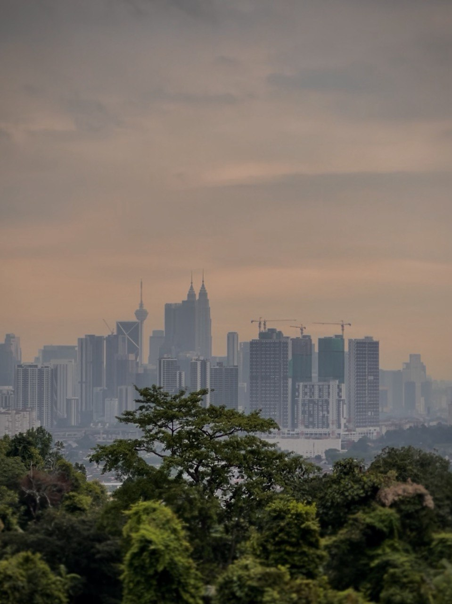
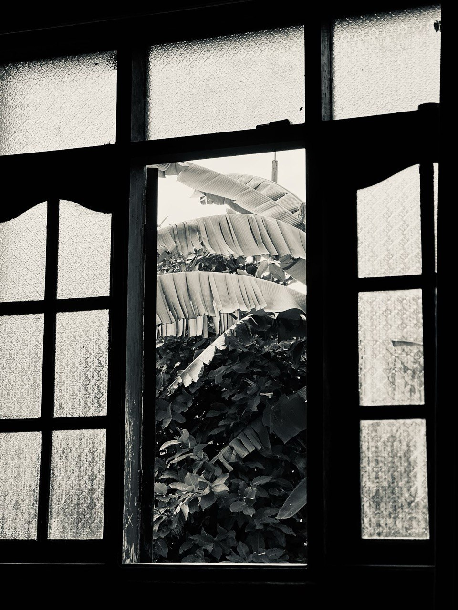
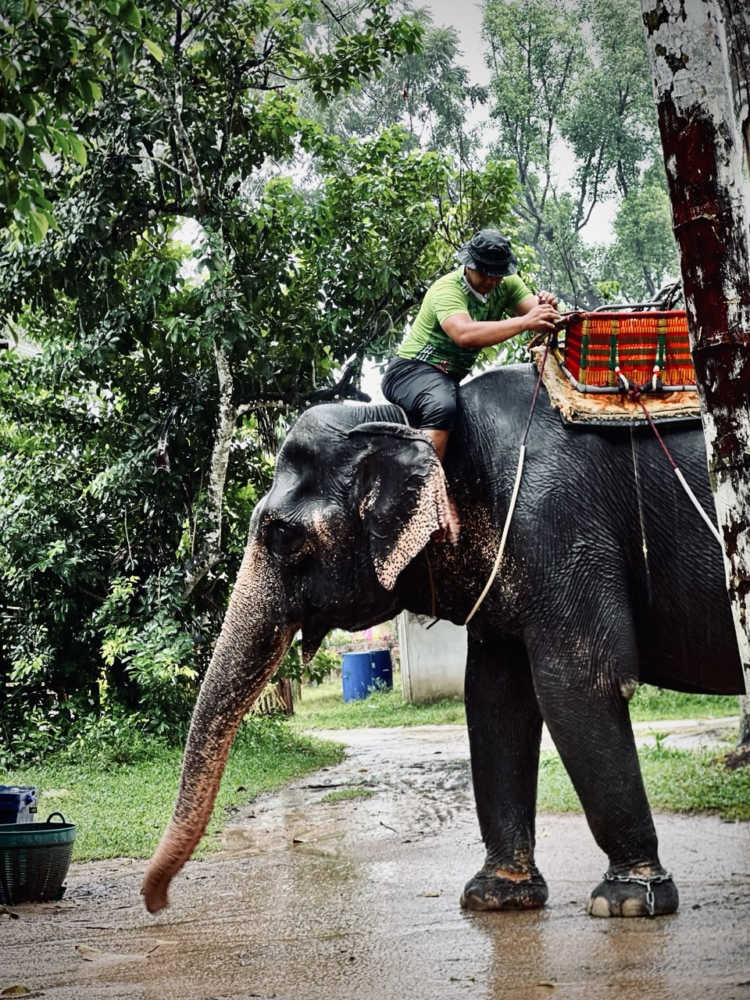
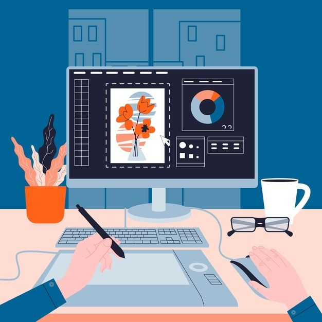
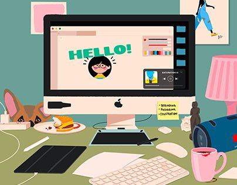
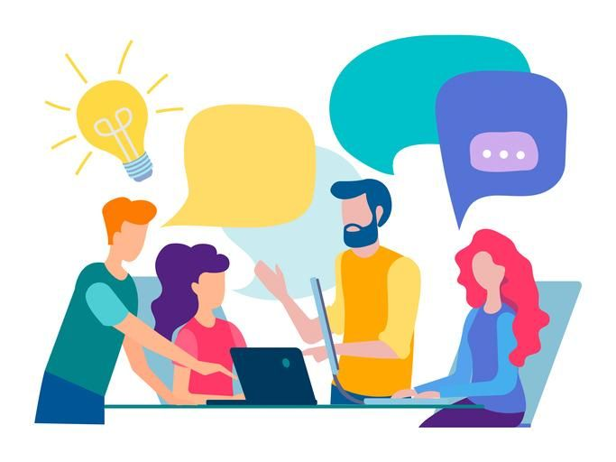

AISYAH'S PHOTOGRAPHY
SKILLS
I have developed a strong passion for photography, and it has become one of the skills I truly enjoy exploring. I love capturing moments whether the subject is a person, an object, or a simple everyday scene. Seeing beautiful photos brings me happiness and inspires me to learn even more in this field. My hope is to continue improving and mastering more photography techniques so I can express creativity in every shot I take.
- Aisyah Saffiah

°❀⋆.ೃ࿔*:･°❀⋆.ೃ࿔*:･
This coffee shop is one of my favorites because of its colors and design,
which remind me of the aesthetics of coffee shops in Japan. It also reflects my hobby, I love taking photos of coffee shops whenever I go cafe hunting, even if I’m alone. This activity always brings me a sense of calm.
The coffee shop is located at Kota Bharu, Kelantan.
I took this photo during a cafe hunting trip after work while I was doing my three-month internship. This image brings peace and tranquility to my mind and soul.

🎧ྀི♪⋆.✮
This photo is full of meaning and holds a special place in my heart.
I took it during a short trip with my beloved family. I love this image because it shows that even in a busy city, moments of calm are important.
The photo was taken at Bukit Antarabangsa, Kuala Lumpur, with only the evening sky, the gentle breeze, and the lush greenery around. It captures the warm glow of the sunset, a perfect time and place to pause and enjoy life after a busy day, as if the day ends wrapped in love and peace.
Taking this photo also reflected my own moment of inner calm, allowing me to feel peaceful in the middle of a busy day.

˚.🎀༘⋆
This photo shows the view from the window in my living room. I took it while feeling the wind coming through the open window. When I look at this picture, it reminds me of many memories in my small home, from childhood until now.
This window has seen all the happiness in my family. It is also my mom’s favorite spot to sit and look at the sky and the moving leaves. This simple view holds a lot of meaning for us.

🎀⋅˚₊‧ ୨୧ ‧₊˚ 🧸
I took this photo during a short trip with my family in Narathiwat, Thailand. For me, this picture is really beautiful. It shows a man sitting on an elephant, guiding it gently. The elephant is standing on a wet path after the rain, with trees and greenery all around.
The scene feels calm and natural, and it captures a simple moment of daily life with the elephant. The colors, the rain on the ground, and the peaceful environment make this photo special to me.
My Basic Skills ⋆⭒˚.⋆
Photography

Enjoy capturing aesthetic moments
, especially cafe and lifestyle
photography using natural lighting and composition.
Web Basics

Basic knowledge of HTML and CSS
to design simple, clean
and responsive personal websites.
Design & Tools

Able to design posters and simple visuals using Canva, Microsoft Word, Adobe Pro and PowerPoint.
Soft Skills

Good communication skills, responsible, able to work in a team and manage time effectively.